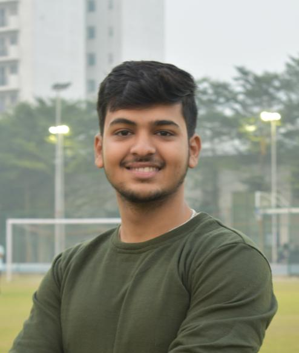

Aryan Sethiya

Summary
I am a hardworking and dedicated individual with experience in administration and development.
Education
- Bachelors in Technology (Computer Science), Bennett University, Greater Noida
Experience
Geeks For Geeks, PR and Outreach.
2022-2023
- I excelled in promoting the chapter's events, building relationships among students and industry, helped in bringing over 200+ registrations in both the events Spin the Code and Code date, served as a POC at NSUT's TechWeek and also collaborated with Newton School for promoting their event.
Geeks For Geeks, Treasurer.
2023-2024
- Managing the chapter's finances, including budgeting, record-keeping, and financial reporting, ensuring the organization's financial health and compliance with regulations. Also being an Office Bearer, I manage working of all the departments for the proficiency of the chapter.
Skills
-
Administration: ⭐️⭐️⭐️⭐️⭐️
- Developing: ⭐️⭐️⭐️⭐️⭐️
Awards And Certificates
- Top 10% in Bennett University.
- SIH, EY and many other hackathons.
Other
© Aryan Sethiya. All Right Reserved